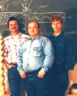

the VORTEX WORLD
this is the Malmö group
|
| We are a couple of friends that started to study Viktor Schaubergers ideas and work in the summer of 1994. From the left we have Morten who is our "wizard" regarding the shaping of different things. Morten has deep understanding of Viktor Schaubergers thinking. Then we have Curt Hallberg who is situated between practice and theory. Curt is a development engineer in his profession and the web master of this site. He has almost a 3D-veiwing when he is trying to explain how the vortices runs. Finally there is Lars (Lasse) Johansson. Lasse is a civil engineer in electronics and is mostly in for the theory behind these phenomena. However, he is a very good help while we are trying to solve practical things. It all started with a scholarship that gave us the possibility to buy the equipment we needed. Firstly we have studied the use of Schaubergers vortice technology in treating water in general but water cleaning and oxygenating particularly. Our work with this was finished in November 1997. In the future we will investigate if and (if so) how Schaubergers so called UFOs worked. We have already shaped the moulds to the special membrane turbines and we are now continuing shaping the body of the aircraft. We will also look on the use of Viktor Schaubergers vortice technology in energy production. |
|
 |
Morten, Curt and Lasse |
the Malmö group l Viktor Shauberger l water treatment l the repulsin l energy production l more links